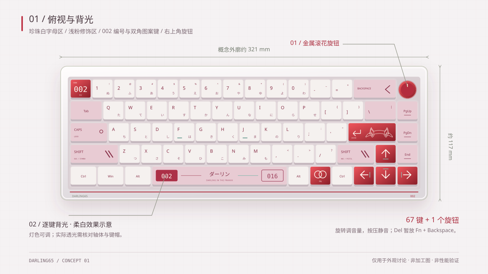
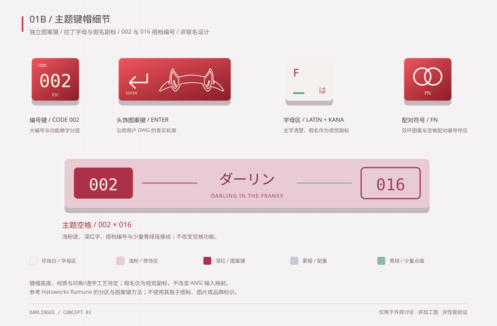
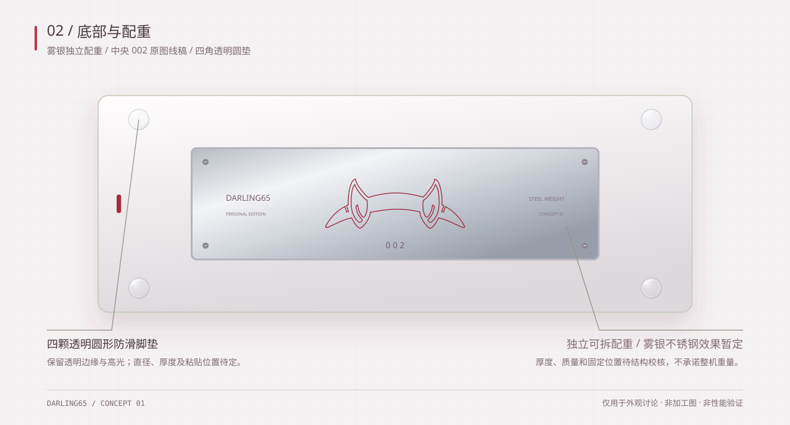
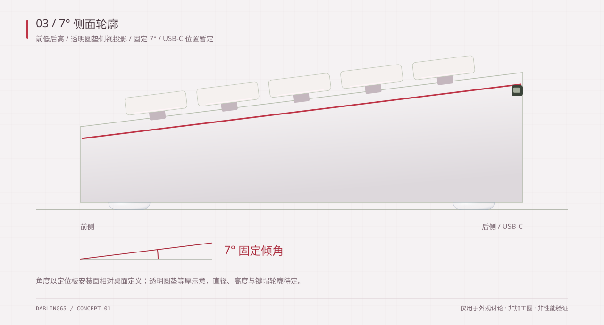

002 / PERSONAL KEYBOARD PROJECT
DARLING65002 主题键帽、背光与 7° 倾角
这版收拢为珍珠白、浅粉与深红：配重改用雾银不锈钢效果，空格改为浅粉，底行改为珍珠白，保留编号与头饰图案。四角改为透明圆形脚垫；配重工艺、质量及圆垫尺寸仍待确认。
67 键 + 旋钮旋转音量 / 按压静音，功能暂定
7° 固定倾角定位板安装面相对桌面
逐键背光柔白效果示意 / RGB 方案待确认
独立配重雾银不锈钢效果暂定 / 质量待核算
仅外观概念，不是加工图。外廓约 321 × 117 mm 只用于比例讨论，尚未做月华轴、轴座、旋钮和内部结构的适配验证。纯 USB-C 有线、8 kHz 目标及 QMK / VIA 要求保持不变；未做硬件性能验证。

01 / 俯视与背光
主题图案集中在 Esc、Enter、空格和 Fn；主字保持可读，功能键位不变。

01B / 主题键帽细节
参考 Hatoworks Ramune 的分区与图案键方法，不复制其素材。假名仅为视觉副标。

02 / 底部与配重
四角改为透明圆垫，配重保留中央 DWG 图案；脚垫尺寸、粘贴方式及配重质量待定。

03 / 7° 侧面轮廓
前后两组透明圆垫在侧视中重合显示；厚度等高示意，需实物验证 7° 倾角。
背光如何呈现
当前图案以键帽顶面印刷效果示意，键间显示柔白背光。图案和字符并不默认透光；材质、印刷与透字工艺需单独确认。
配重如何落地
中央图案直接取自你提供的 DWG，仅改变尺寸、位置与线色，不再自由绘制角形。配重材质、固定及质量仍待确认。查看提取线稿。
现在可以修改什么
可以先选修饰键颜色、假名副标、主题空格与图案键的密度。在旁边的预览里标注需要增减的元素即可。